鳥の楽園！BIRDKINGDOMへ行ってきた
５月も終わりかけの日曜日、ナイアガラにあるバードキングダムへ行った。
トロントからナイアガラ迄は毎度おなじみのsafeway toursのカジノシャトルバスで。
Holiday Innの前から出る朝９時４５分発のバスに乗り、ナイアガラのFallsview Casino Resortに着いたのは１１時２０分。まだ５月だというのにこの日の気温３６度。真夏日だが、湿度が低くカラッとした暑さ。
カジノでかるく擦った後は気をとりなおして、Embassy Suites Hotelに入っているレストランKEGでランチを食べることにした。
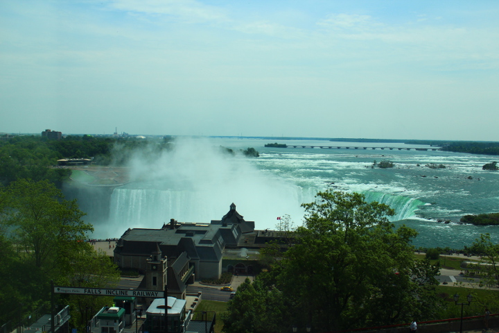
１２時のオープン直後に入ったらまだ誰もいなくて、窓際の眺めの良い席に案内してもらえた。

KEGは１９７１年、バンクーバー発のステーキハウス。ちょっと高めだけど、その分サービスも良い。注文したのはトップサーロインステーキ 6oz（約１７０グラム） 一皿27ドル。
腹ごしらえした後はバードキングダムへ。
バードキングダムは、世界一鳥が放し飼いにされている室内施設だそう。
建物は元々は1907年にコルセットの工場として建てられた建物で、その後は１９５８年にはエジプトのミイラや遺跡品などを展示する世界的にも有名な博物館になった。長らく行方不明だった古代エジプトのファラオ、ラムセス１世もそれとわからず展示されていた。今もその面影を偲ぶような展示品も見受けられる。
↓絶滅危惧種や珍しい鳥などを含む４０種類以上の小鳥が放し飼いにされている、Small Bird Aviary。
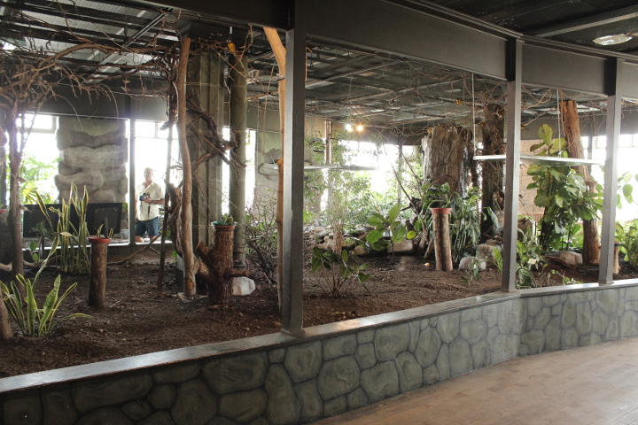
手のひらサイズの小鳥が忙しく飛び交う。普段青空高くを飛んでいて絶対に間近では見られない小鳥が飛び交うのをみているとあきなくて、この空間にいつまでもいたい気持になった。

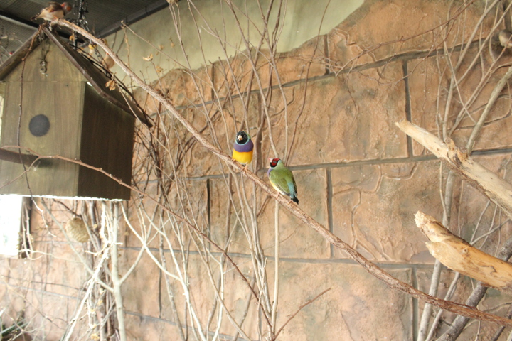
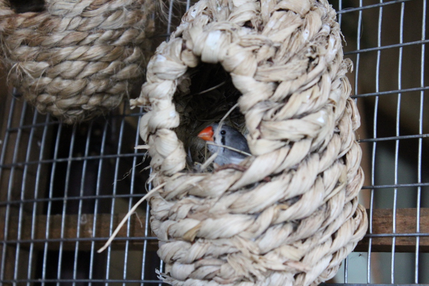
そして、３階にあるNight Jungleのエリアでは、一日に２回、コウモリが餌を食べるのを見られる。
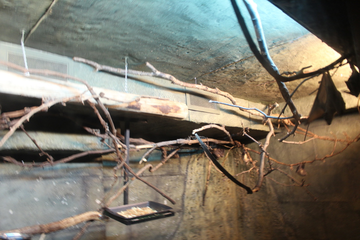
↑写真右側の黒っぽい逆三角形のものがコウモリ。トレーに置かれた餌（フルーツ）には最初誰も見向きもしなかったのが一羽また一羽と食べにきて、そのうち皆でもぐもぐ。奪いあっているのもいた。逆さにぶら下がりつつ上手にフルーツの塊を口に運ぶ様子に関心。
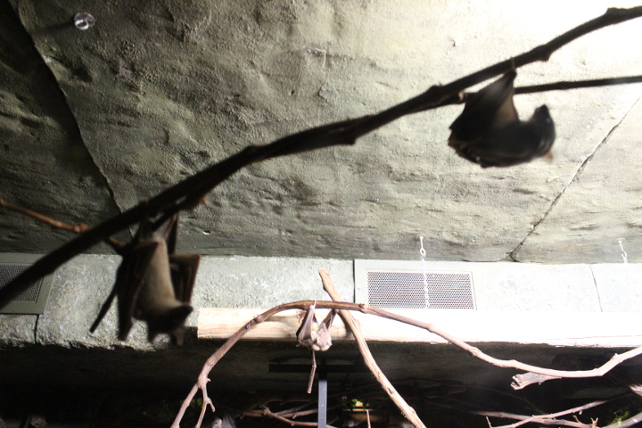
熱帯雨林を再現したMain Aviaryは大きな吹き抜けに滝が流れる中を８０種近く、４００羽もの世界中の鳥が放し飼いにされている。
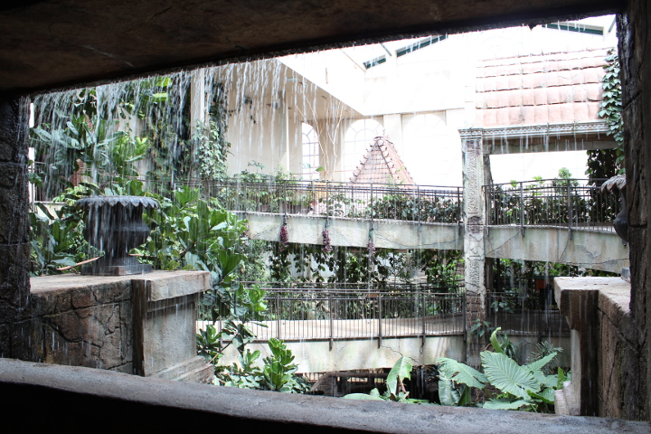
ここにはAustralian Rainbow Lorikeet が放し飼いにされている一角があり、この中では２ドル払って小さなカップに入ったネクターを買い、インコにあげることができる。これが 非常に楽しかった。カップを手に持っていると、色鮮やかな大きめのインコが飛んできて腕にとまり、カップの中のネクターをごくごくと飲むのだ。J次郎には ４羽もきて、飲み終わった後も気に入ったらしくそれぞれの肩に２羽ずつ落ち着き、飛び去る気配もなくとまっていた。楽しすぎて写真を撮ることなどすっかり 忘れてしまった。
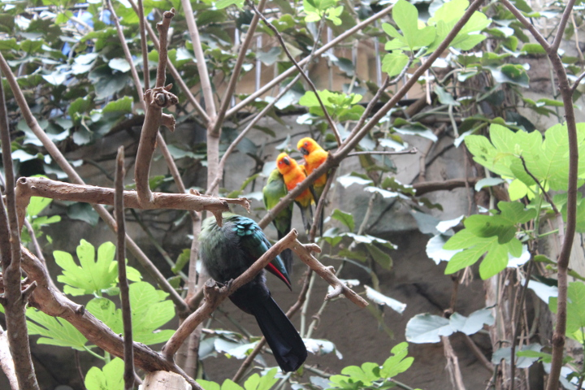
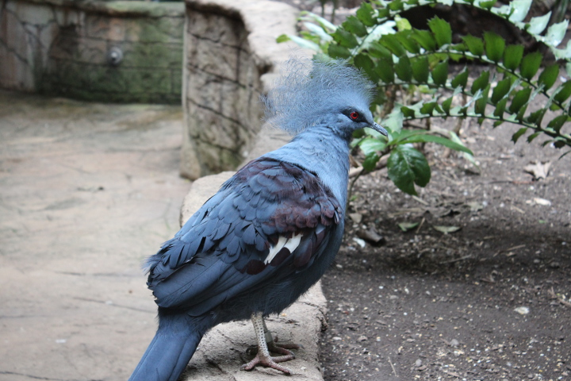
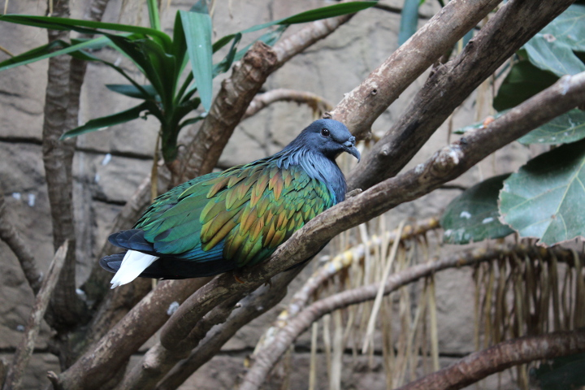
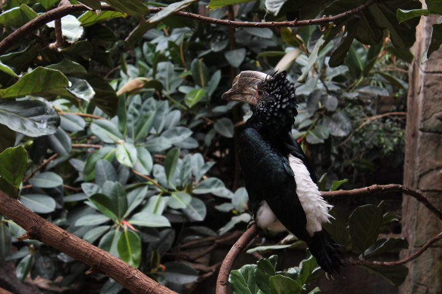
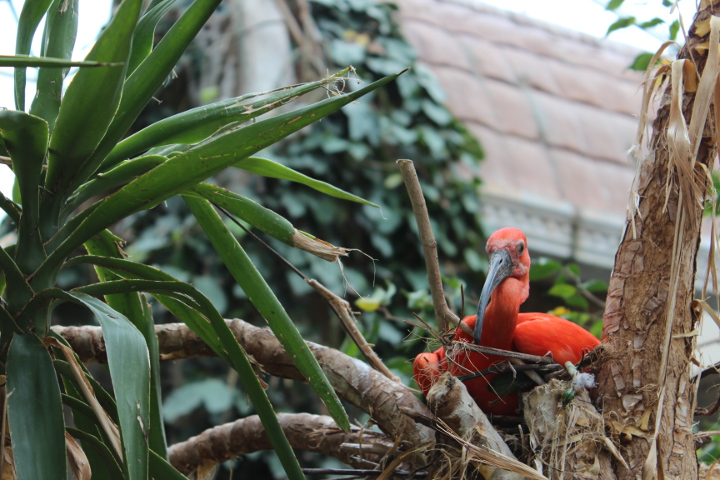
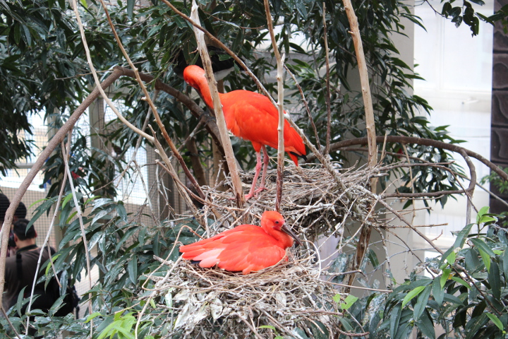
鳥好きにはたまらなく楽しい施設だった。